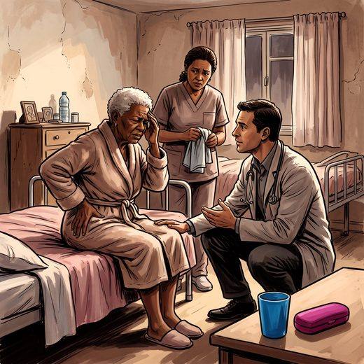

Consulta rápida à beira do leito
Condutas, doses e interações.
Referências da aula · 15
- Mukamal RC, Dias LM, Sarti TD, Nunes R, Rego G. The role of telemedicine in enhancing palliative care for older adults: opportunities and challenges (scoping review). BMC Geriatr. 2025;25(1):474. doi:10.1186/s12877-025-06041-1.DOI
- Raja SN, Carr DB, Cohen M, et al. The revised International Association for the Study of Pain definition of pain: concepts, challenges, and compromises. Pain. 2020;161(9):1976-82. PMID 32694387. doi:10.1097/j.pain.0000000000001939.PubMedDOI
- Kosek E, Cohen M, Baron R, et al. Do we need a third mechanistic descriptor for chronic pain states? Pain. 2016;157(7):1382-6. PMID 26835783. doi:10.1097/j.pain.0000000000000507.PubMedDOI
- Treede RD, Rief W, Barke A, et al. Chronic pain as a symptom or a disease: the IASP classification of chronic pain for the ICD-11. Pain. 2019;160(1):19-27. PMID 30586067. doi:10.1097/j.pain.0000000000001384.PubMedDOI
- Lautenbacher S. Experimental approaches in the study of pain in the elderly. Neurosci Biobehav Rev. 2012;36(1):315-24.
- Bouhassira D, Attal N, Alchaar H, et al. Comparison of pain syndromes associated with nervous or somatic lesions and development of a new neuropathic pain diagnostic questionnaire (DN4). Pain. 2005;114(1-2):29-36. PMID 15733628. doi:10.1016/j.pain.2004.12.010.PubMedDOI
- Hadjistavropoulos T, Herr K, Turk DC, et al. An interdisciplinary expert consensus statement on assessment of pain in older persons. Clin J Pain. 2007;23(1 Suppl):S1-43. PMID 17179836. doi:10.1097/AJP.0b013e31802be869.PubMedDOI
- American Geriatric Society Panel on Pharmacological Management of Persistent Pain in Older Persons. Pharmacological management of persistent pain in older persons. J Am Geriatr Soc. 2009;57(8):1331-46. PMID 19573219. doi:10.1111/j.1532-5415.2009.02376.x.PubMedDOI
- Herr K, Coyne PJ, McCaffery M, Manworren R, Merkel S. Pain assessment in the patient unable to self-report: position statement with clinical practice recommendations. Pain Manag Nurs. 2011;12(4):230-50. PMID 22117755. doi:10.1016/j.pmn.2011.10.002.PubMedDOI
- Warden V, Hurley AC, Volicer L. Development and psychometric evaluation of the Pain Assessment in Advanced Dementia (PAINAD) scale. J Am Med Dir Assoc. 2003;4(1):9-15. PMID 12807591. doi:10.1097/01.JAM.0000043422.31640.F7.PubMedDOI
- Lefebvre-Chapiro S. The Doloplus-2 scale: evaluating pain in the elderly. Eur J Palliat Care. 2001;8(5):191-4.
- Husebo BS, Ballard C, Sandvik R, Nilsen OB, Aarsland D. Efficacy of treating pain to reduce behavioural disturbances in residents of nursing homes with dementia: cluster randomised clinical trial. BMJ. 2011;343:d4065. PMID 21765198. doi:10.1136/bmj.d4065.PubMedDOI
- Santos JG, Brito JO, de Andrade DC, et al. Translation to Portuguese and validation of the Douleur Neuropathique 4 questionnaire. J Pain. 2010;11(5):484-90. PMID 20015708. doi:10.1016/j.jpain.2009.09.014.PubMedDOI
- Valera GG, Carezzato NL, Vale FAC, Hortense P. Cultural adaptation of the scale Pain Assessment in Advanced Dementia - PAINAD to Brazil. Rev Esc Enferm USP. 2014;48(3):462-8. PMID 25076274. doi:10.1590/s0080-623420140000300011.PubMedDOI
- Radbruch L, De Lima L, Knaul F, et al. Redefining palliative care: a new consensus-based definition. J Pain Symptom Manage. 2020;60(4):754-64. PMID 32387576. doi:10.1016/j.jpainsymman.2020.04.027.PubMedDOI
Documentos oficiais
Leis e publicações do Ministério da Saúde sobre o cuidado da pessoa idosa, de acesso livre.
Abrir os documentos